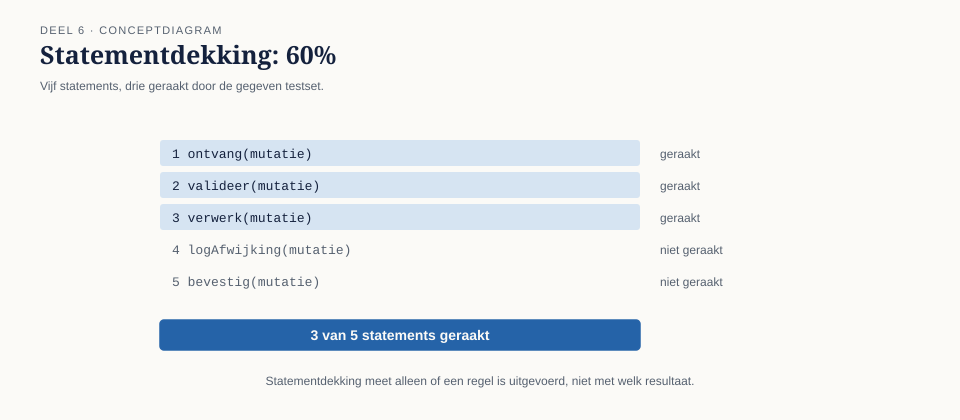
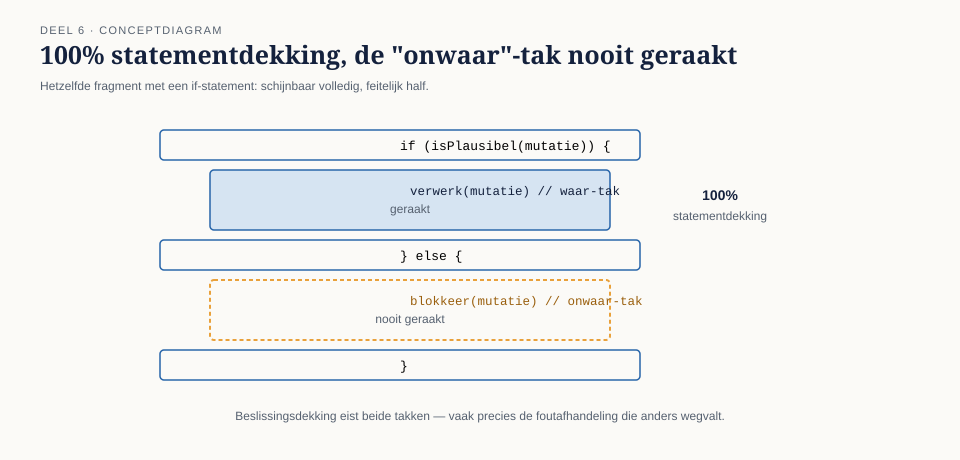
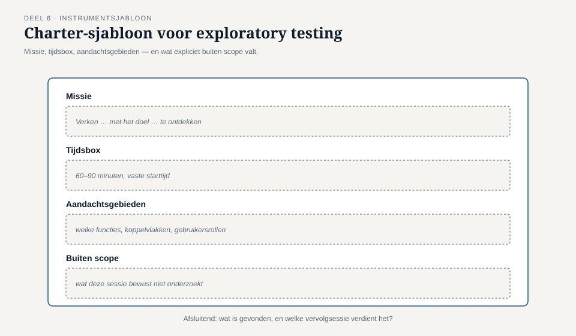

Deel 6 — White-box en ervaringsgebaseerd testen
Slidedeck · Ductus-cursus Testen en Kwaliteitsborging · niveau 1 · deel 6 van 30 · 24 slides
Slidetypen: titleSlide, sectionSlide, bulletsSlide, statementSlide, quoteSlide, tableSlide, figureSlide, opdrachtSlide.
Slide 1 — titleSlide
White-box en ervaringsgebaseerd testen Deel 6 · Niveau 1 Fundament Cursus Testen en Kwaliteitsborging
Slide 2 — statementSlide
94% statementdekking.
Een keurig getal. Ruim boven de norm.
Slide 3 — quoteSlide
"Welke van die statements maakten deel uit van de foutafhandeling rond een mislukte doorzending?"
— Iris Verweij aan Jelle Bakker
Het antwoord kostte een halfuur uitzoeken.
Slide 4 — statementSlide
Een statement kan "bereikt" zijn zonder ooit gericht getest te zijn.
Dekking meet aanraking, niet onderzoek.
Slide 5 — sectionSlide
1. White-boxtechnieken
Slide 6 — figureSlide

Slide 7 — figureSlide

Slide 8 — bulletsSlide
Statement- vs. beslissingsdekking
- Statementdekking — is deze regel ooit uitgevoerd?
- Beslissingsdekking — zijn béíde uitkomsten van elke beslissing beproefd?
100% beslissingsdekking impliceert 100% statementdekking. Niet andersom.
Slide 9 — opdrachtSlide
Opdracht 6.1 — Bereken de dekking
Elf regels pseudocode, twee testgevallen. Reken het percentage uit. Welke tak is nooit geraakt?
20 minuten, tweetallen.
Slide 10 — statementSlide
100% dekking bewijst dat elke regel is aangeraakt.
Het bewijst niets over wat er gebeurde toen zij werd aangeraakt.
Slide 11 — opdrachtSlide
Opdracht 6.2 — Het catch-blok
Hoe kan een regel "gedekt" zijn zonder gericht getest te zijn? Welke vraag had dit sneller boven water gebracht?
15 minuten, individueel.
Slide 12 — sectionSlide
2. Ervaringsgebaseerde technieken
Slide 13 — bulletsSlide
Exploratory testing — vier elementen
- Een charter (missie)
- Een vaste tijdsbox
- Aantekeningen tijdens het verkennen
- Een korte debrief na afloop
Niet: "maar wat aanklooien."
Slide 14 — figureSlide

Slide 15 — opdrachtSlide
Opdracht 6.3 — Schrijf een charter
Voor een exploratory-sessie op WGP 1.0 — zwakke testbasis, systeem uit 2013.
20 minuten, groepjes van drie.
Slide 16 — bulletsSlide
Error guessing — checklist-uittreksel
- Lege of ontbrekende waarde waar de eis dat niet uitsluit
- Gelijktijdige mutaties op hetzelfde deelnemersnummer
- Naam met apostrof, koppelteken, diakritisch teken (→ T6)
- Trage of onbereikbare externe koppeling
- Maximum en net-over-het-maximum, vanuit een andere invalshoek
Slide 17 — opdrachtSlide
Opdracht 6.4 — Error guessing met checklist
Vijf punten, elk één concreet testgeval voor het Mutatieplatform.
15 minuten, individueel.
Slide 18 — figureSlide

Slide 19 — sectionSlide
3. Techniekkeuze in samenhang
Slide 20 — tableSlide
Zes technieken, één keuze
| Situatie | Techniek |
|---|---|
| Heldere eis, één veld | equivalentie + grenswaarden |
| Meerdere condities samen | beslissingstabel |
| Gedrag hangt af van geschiedenis | toestandsovergangen |
| Kritieke berekening, foutafhandeling | white-box (beslissingsdekking) |
| Zwakke testbasis | exploratory testing |
| Bekende risicogebieden | error guessing |
Slide 21 — bulletsSlide
TMAP-lens
- Ervaringsgebaseerd testen: structureel groter aandeel — hele team denkt mee
- Mutatietesten: niet "is deze regel geraakt?" maar "zou mijn testset het merken als deze regel fout was?"
Het catch-blok zou een mutatietest hebben blootgelegd. Dekking alleen niet. Deel 11 werkt dit uit.
Slide 22 — bulletsSlide
Examenaansluiting — CTFL hoofdstuk 4 (white-box/ervaring)
- Statement- en beslissingsdekking
- Exploratory testing, error guessing
Let op: exploratory testing is niet ongestructureerd — charter, tijdsbox, debrief.
Slide 23 — bulletsSlide
Huiswerk
- Opdracht 6.5 — techniekkeuze in samenhang, terug naar 5.5 (startpunt deel 7)
- Oefentoets, tien vragen
Slide 24 — statementSlide
Volgende keer: risicogebaseerd testen
Met zes technieken in de hand — waar zet je ze op in? Dit sluit T2: 180 van de 312 testgevallen gingen over inloggen en navigatie.